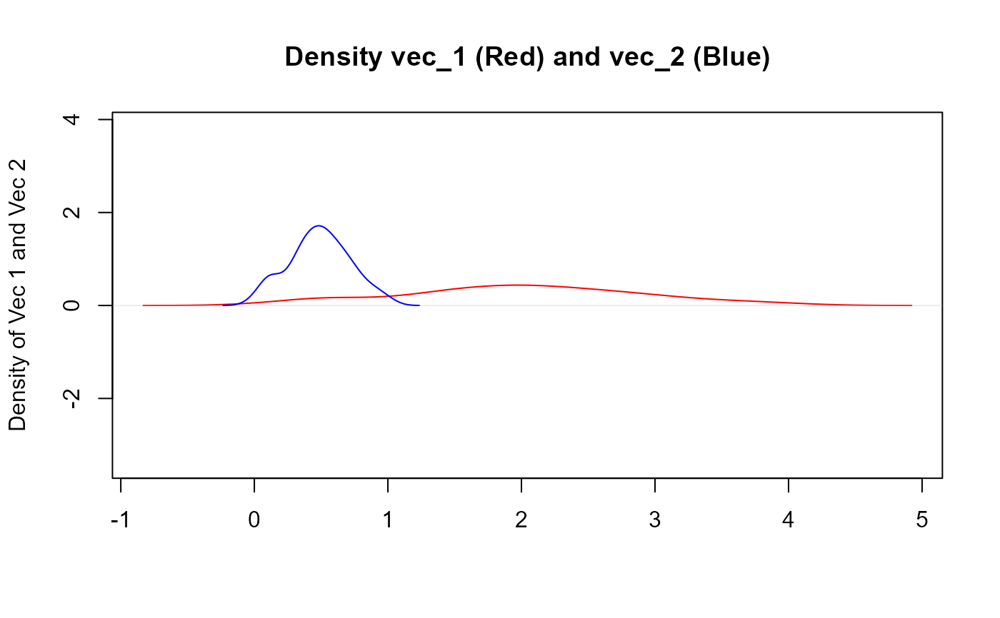

Takes a numeric vector and will return a vector that has been scaled from [0,1]
Details
Takes a numeric vector and will return a vector that has been scaled from [0,1]
The input vector must be numeric. The computation is fairly straightforward.
This may be helpful when trying to compare the distributions of data where a
distribution like beta which requires data to be between 0 and 1
$$y[h] = (x - min(x))/(max(x) - min(x))$$
See also
Other Vector Function:
bootstrap_p_vec(),
bootstrap_q_vec(),
cgmean(),
chmean(),
ckurtosis(),
cmean(),
cmedian(),
csd(),
cskewness(),
cvar(),
tidy_kurtosis_vec(),
tidy_skewness_vec()
Examples
vec_1 <- rnorm(100, 2, 1)
vec_2 <- tidy_scale_zero_one_vec(vec_1)
dens_1 <- density(vec_1)
dens_2 <- density(vec_2)
max_x <- max(dens_1$x, dens_2$x)
max_y <- max(dens_1$y, dens_2$y)
plot(dens_1,
asp = max_y / max_x, main = "Density vec_1 (Red) and vec_2 (Blue)",
col = "red", xlab = "", ylab = "Density of Vec 1 and Vec 2"
)
lines(dens_2, col = "blue")
